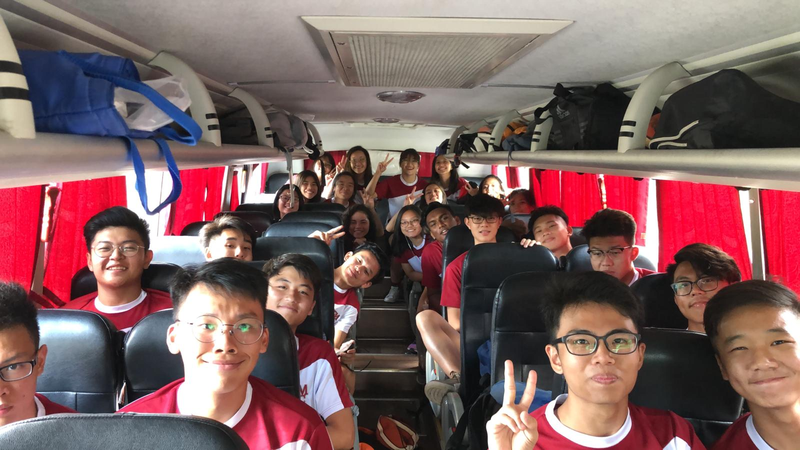

Term 1
TM Run 2019
TMJC’s very first college sporting event (TM Run) took place on 15 March 2019 at Pasir Ris Park.

The aim of the run is to promote social bonding and healthy competition amongst students and staff of TMJC. In preparation for TM Run, students were taught the concepts of pacing, effort judgement, as well as the varying types and intensities of running-related activities as part of a structured Physical Education programme at TMJC. Teaching and non-teaching staff members also participated in a Fun Run alongside their students.

It is clear from the smiling faces that the TMJC family had a great time together!

JC1 CG Day- Bonding through VIA activities
8th March, a typical Friday, was not quite a typical school day for our JC1 students as they headed out of College in the morning, to the Tampines neighbourhood for newspaper collection fund-raising meant to help needy families in Tampines North.

The action did not stop there. Back in College in the afternoon, CGs had the opportunity to find out more about VIA opportunities through an interactive segment with various welfare organisations invited to College under the Community Awareness Programme.

What made CG day extra special was the red eggs making activity where students had a hand in dyeing eggs red and presenting them to their parents as a show of gratitude at the start of their JC journey, for their parents’ care and support in their growth.
Through the day’s activities, we hope there was a knitting of hearts, be it amongst members of the same CG or between parent and child.
TMJC Basketball Team - Cultural and Skills Exchange Programme
Our Basketball students left for Kuala Lumpur, Malaysia for a 5-day cultural and skills exchange programme this afternoon, 15 March. We wish them a safe and wonderful time of learning.

TMJC Student Council Election Rallies 2019
TMJC Student Council Election Rallies have started. We wish all candidates a good time of learning and that they will fully enjoy the experience.

JC Experiential Programme (JXP) 2019
TMJC hosted a group of 14 Senior Middle 2 PRC scholars from 25th February (Mon) to 10th March (Fri) 2019.
%202019/JC%20Experiential%20Programme%20(JXP)%202019_1.jpg)
%202019/JC%20Experiential%20Programme%20(JXP)%202019_3.jpg)
JC1 Badge Pinning Ceremony
On 4 February, TMJC held our first Badge Pinning Ceremony for the JC1s who, in the last one month, have eased into the routine and rhythm of college life. Our JC2 students who are seniors in this journey, pinned the badges on for their juniors in a symbolic gesture of support and encouragement. Both cohorts will face different challenges this year but standing together as a unified TMJC student body, they will more than conquer the challenges that will come their way!

T-Net Tertiary Cup Basketball Tournament
On 2nd March last Saturday, our College basketball team participated in the T-Net Tertiary Cup Basketball tournament. There were ten other JC teams that took part in this tournament and we are happy to announce that our boys team emerged Champions!

ASCD Annual Conference 2019

Our Teachers, Mrs Seah Chai Ju, Mrs Wendy Goh, Mr Sung Peir Yih and Mr Wee Liang Tong left for Chicago, USA on 8 March to attend the ASCD Annual Conference and visit schools as well as colleges as part of their learning. We wish them well and look forward to their return and learning from their sharing.
Celebratory Lunch
It was an afternoon of special treats for our JC1 and JC2 students as the College came together to celebrate the effort and achievements of our recently graduated batch of students, who received their 2018 GCE A-Level results on 22 February 2019. Laughter and joyful chatter can be heard as students gather around the Pavilions relishing the treats and celebrating a shorter school day that day.

The College is now rooting for our JC2 students that even as they put their best foot forward in their preparation for this year’s GCE A–Level Examination, they will achieve stellar results that they can be proud of!
Guitar Ensemble Music Showcase 2019


8th MLEP Series of Talks & MLEP Orientation
On Saturday 23 February, Tampines Meridian Junior College collaborated with MOE’s Curriculum Planning and Development Division (CPDD) to organise the 8th Malay Language Elective Programme (MLEP) Series of Talks and the MLEP Orientation. 
The speaker, Dr Mohd Faizal Musa, provided the audience with profound insights into Malay Culture through his talk entitled ‘Bijaknya Budaya Melayu’. His speech encompassed different aspects of Malay Culture including its rich heritage in gastronomy as well as the nature and well-being of life.
In the afternoon, the students from the three different MLEP centres gathered for the MLEP Orientation. Students were given the opportunity to interact with one another and have some fun while playing games prepared by the MLEP scholars. JC2 TMJC MLEP students acted as facilitators for these activities and did their best to ensure that the students enjoyed the Orientation as a whole.
Release of 2018 A Level Results at TMJC
Congratulations to the cohort of 2018 from Tampines Junior College and Meridian Junior College for your sterling results! We are proud of you!

National Games Athletes Oath Taking Ceremony
To mark the opening of the 2019 National Schools Games, and to instil character in sporting excellence in our students, the college’s Sports Captains took the Athletes’ Oath in from of all staff and students this morning.

The oath-taking ceremony is part of a larger movement in Singapore schools to instil among our students the spirit of striving, losing with grace and bouncing back from set-backs as they compete in sports and games.

May our College athletes be inspired to strive for their best, embody the true spirit of sportsmanship in victory and defeat, and through the process enrich their lives. Let us wish them the very best in the upcoming games!
JC2 Council Re-Installation
20th February 2019 was an important milestone for TMJC, as the first batch of Tampines Meridian Student Councillors (TMSC) were installed in the presence of the entire college.
During the ceremony, Ms Yoong encouraged the student councillors who play an important role in leading their peers to lay the foundation for our new college’s, and to foster a strong college spirit. The student councillors were then presented with their new council badges featuring the college logo, which they pinned on proudly.
Thereafter, Abdul Qayyum Zaki B Zulkifli delivered his first speech as the first TMSC president in the presence of his peers, where he encouraged his peers to forge strong bonds and build meaningful friendships in our new home, TMJC.
The ceremony ended on a high note as the councillors recited their Council Oath in unison, pledging to serve the college faithfully and to do their absolute best to do our college proud and enrich the college experience for their peers! We look forward to a fresh beginning with our newly installed TMSC!
Total Defence Day
On 19 February 2019, the pioneer JC1 cohort of Tampines Meridian Junior College (TMJC) embarked on a learning journey to Singapore Discovery Centre (SDC) in commemoration of Total Defence Day.
Through a special programme designed by the staff of TMJC and SDC, students learnt about the multi-dimensional nature of defence in Singapore. The programme sought to engage them by incorporating elements of experiential learning and friendly competition. Students participated in many hands-on activities where they learned more about the six pillars of Total Defence. Classes also competed among themselves in the ‘Amazing Race’ segment that focused on helping students understand the importance of Digital Defence in Singapore.

TMJC JC1 Orientation 2019: “HORIZON”
“DAY OUT” @ Pasir Ris Park
On 11 February 2019, TMJC JC1 students had their first day out at Pasir Ris Park together as a cohort. The JC1 students took part in a series of exhilarating station games. These station games were planned and executed by a team of 245 enthusiastic JC2 OGLs. Through this fun-filled day packed with exciting activities, the JC1 students were not only able to bond with their Orientation Groups, but also share the experience as a cohort.

Finale
TMJC's first JC1 Orientation ended on a high note on 12 February 2019, with the Finale. Both the JC1s and their seniors poured their hearts into a whole series of impressive performances of songs, dances and cheers. We are heartened to hear the thunderous cheers by our students throughout the Orientation - that is the TMJC spirit!
Alumni Sharing at Orientation

On 12 February, the last day of Orientation, two of our recently graduated alumni from both our parent colleges – Jacelyn (MJC 17S303) and Ashlyn (TPJC17S09) – did a sharing on their JC journey with their juniors.The sharing was heartfelt and authentic, with them pointing out some key differences between the JC experience and the secondary school experience, and the challenges they faced along the way, such as managing their academics, CCA and Project Work responsibilities.
Jacelyn and Ashlyn shared candidly that the JC journey might prove challenging, and advised their juniors to be ready to seek help from teachers, the college counsellors, and their friends when the going gets tough. At the same time, they also encouraged their juniors to be open to helping others out if their peers do approach them. Jacelyn and Ashlyn ended their sharing by reminding the freshmen to believe in themselves, and not to “measure [their] progress with someone else’s ruler”.
The College sincerely appreciates both alumni for taking time and the effort to share with their juniors. We look forward to more of our alumni coming back!
Lunar New Year Appreciation and Staff Lo-hei 2019
大年初九! On the 9th Day of the Lunar New Year, as part of the college’s Lunar New Year celebrations, the school leaders and staff well-being representatives presented ang baos as a blessing from the TMJC staff to our 26 deserving OSOs, security guards, contract cleaners and ICT team members who have been supporting the College unreservedly in so many ways. 
Following that, all the staff gathered for our very own LO-HEI & breakfast as one Big Family! Lots of joy, laughter and smiles filled the atrium as friends and colleagues caught up with one another over the joyous feasting. 
Here’s wishing one and all happiness and good health in the new lunar year! 新年快乐， 万事如意， 心想事成，身体健康!
Chinese New Year 2019

On 4th Feb 2019, the eve of Chinese New Year, the MTL department organised a special CG and OG-bonding Bingo activity for the cohort to usher in the new year. This bonding activity has allowed the students to better understand the customs and traditions of the Lunar New Year celebrations and have fun together in the process.
 We ended our Chinese New Year celebrations as a TMJC family with a mass Lo-Hei session with our CAC members, EAS, contract cleaners, canteen vendors, staff and students. Our teachers also brought their little ones along to immerse in this joyous festive celebration! Happy Chinese New Year to everyone!
We ended our Chinese New Year celebrations as a TMJC family with a mass Lo-Hei session with our CAC members, EAS, contract cleaners, canteen vendors, staff and students. Our teachers also brought their little ones along to immerse in this joyous festive celebration! Happy Chinese New Year to everyone!Project REach 2019
 On 26 January 2019, staff and students of TMJC came together to spread the Chinese New Year festive cheer to Pasir Ris residents while collecting old clothes and newspapers to raise funds. "Project REach" is the college’s very first values-in-action (VIA) effort. The name aptly summarises our outreach effort to the Pasir Ris community with the alphabets "P", "R", "E" representing our collaboration with Pasir Ris East.
On 26 January 2019, staff and students of TMJC came together to spread the Chinese New Year festive cheer to Pasir Ris residents while collecting old clothes and newspapers to raise funds. "Project REach" is the college’s very first values-in-action (VIA) effort. The name aptly summarises our outreach effort to the Pasir Ris community with the alphabets "P", "R", "E" representing our collaboration with Pasir Ris East. With the support of the residents, our college managed to collect 5.5 tonnes of old clothes and 12.7 tonnes of newspapers and papers, raising a total of $2372.00 for the Pasir Ris East Community Development Welfare Fund. These funds will be used to purchase necessities and home improvement items for low-income households in Pasir Ris East.
With the support of the residents, our college managed to collect 5.5 tonnes of old clothes and 12.7 tonnes of newspapers and papers, raising a total of $2372.00 for the Pasir Ris East Community Development Welfare Fund. These funds will be used to purchase necessities and home improvement items for low-income households in Pasir Ris East.

TMJC is grateful for the residents’ support and we will continue to find ways to give back to the community. It was also a great opportunity for our students and staff to work together for a worthy cause.
Staff Bonding & Dinner
On 18 January 2019, the staff of TMJC embarked on different fun-filled learning and bonding activities that promoted team building, communication, problem-solving, decision-making and trust-building.
In the evening, the staff enjoyed a scrumptious dinner at Concorde Hotel Ballroom to bond as a college. The event was filled with fun games and our very first family portrait was taken.


The TMJC family spirit shone through brightly and will continue to grow from strength to strength!
TMJC First Open House 2019
On 15th January 2019, TMJC held its Open House. The day began with an exciting showcase of talents by some of the CCA groups.

 This was followed by the official opening by TMJC’s principal, Ms Pamela Yoong, flanked by the mascots of both parent colleges TPJC and MJC.
This was followed by the official opening by TMJC’s principal, Ms Pamela Yoong, flanked by the mascots of both parent colleges TPJC and MJC.

Prospective students had the opportunity to learn more about the A Level curriculum and our co-curricular programmes through the exciting subject and CCA exhibition booths helmed by welcoming staff and students, sit in our demo Subject lectures, and also got to hear from our Principal as she shared more about TMJC.

Visitors got to experience TMJC’s vibrant spirit, immersed in a carnival atmosphere where they were treated to delicious treats. They also witnessed the invigorating Clan Dance put up by TMJC’s JC2 students, and were brought on guided tours through the college to learn about its many new and upgraded facilities.

We hope our visitors got a good sense of what TMJC has to offer and left with positive memories of meeting our warm and happy TMJC family. See you next year!
First Day of School at Tampines Meridian Junior College
On 7 January 2019, TMJC opened its doors for the first time for its JC2 cohort of students.
The day began with the lowering of the flags of both parent colleges, Tampines JC and Meridian JC, to remind the college of its heritage, followed by the raising of the new TMJC college flag along with the state flag.


TMJC Principal, Ms Pamela Yoong, addressed the cohort in the Hall, encouraging everyone to seize the moment and give their best for the year ahead.

Students also presented a gift of apples to their tutors as well as college support staff, to show their appreciation for the guidance and care shown by the college.
The programme ended on a high note as a team of teachers pitted themselves against a student team in a friendly soccer-match to literally kick off the new academic year on our newly-turfed field.

The entire programme was also reported by The Straits Times, Lianhe Zaobao, Wanbao, Berita Harian, and Channel 8 News.
Open House 2019

Welcome to Tampines Meridian Junior College (TMJC)
TMJC will be formed from the merger of Tampines Junior College and Meridian Junior College with effect from 2019.
When is it?
Time: 1030 - 1600